The first step to create homographies is to have correspondence points between images. Below are two sets of images with their corresponding points.
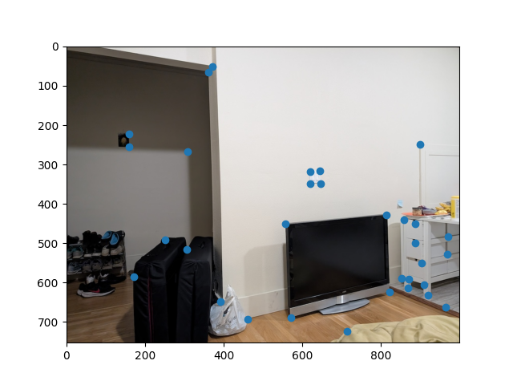 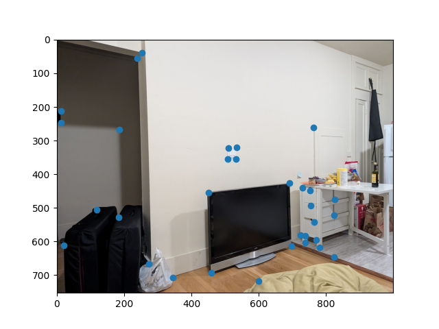To calculate the homography matrix, the steps are below:
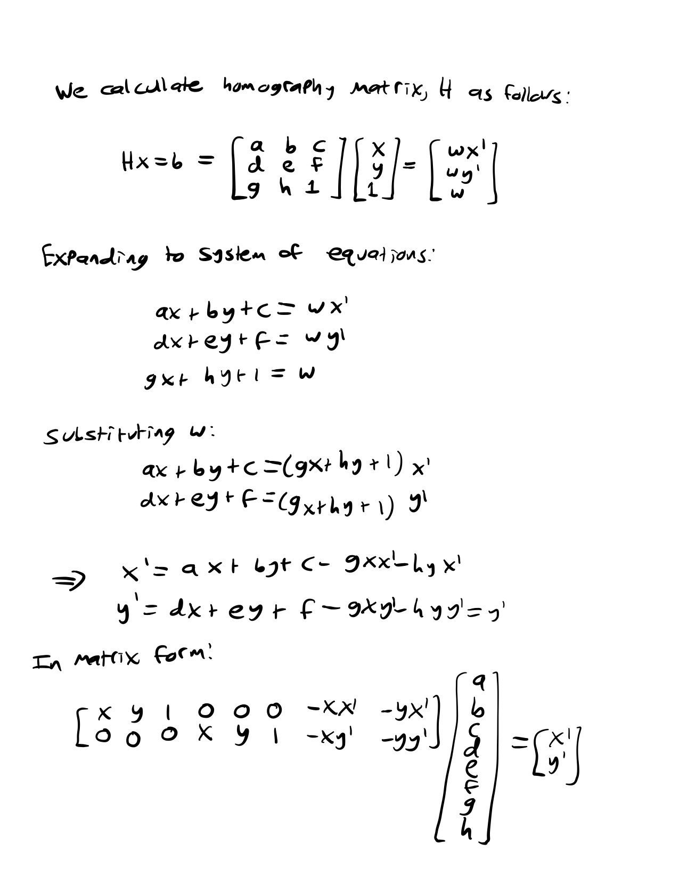We can stack these 2x8 matrices up according to how many points we have and then use least squares to solve for a-h. It's important to note that in order to have a determined system, we need at least four points.
The following sections show homographies in action, as our calculated H is used to provide the warp for the remainder of this project.
For this section I developed a warp function and used it to rectify images. The warp function works like this: First use a forward warp on the original border of the image to get the warped border. Then use that border to obtain a polygon of the warped points. Obtain a derived original image points by inverse warping the warped polygon. Then define the coordinates of the new image. It's important to make sure that the entire warped image fits within the frame. Finally, interpolate the colors from the original image into the warped image.
The rectification results are shown below:
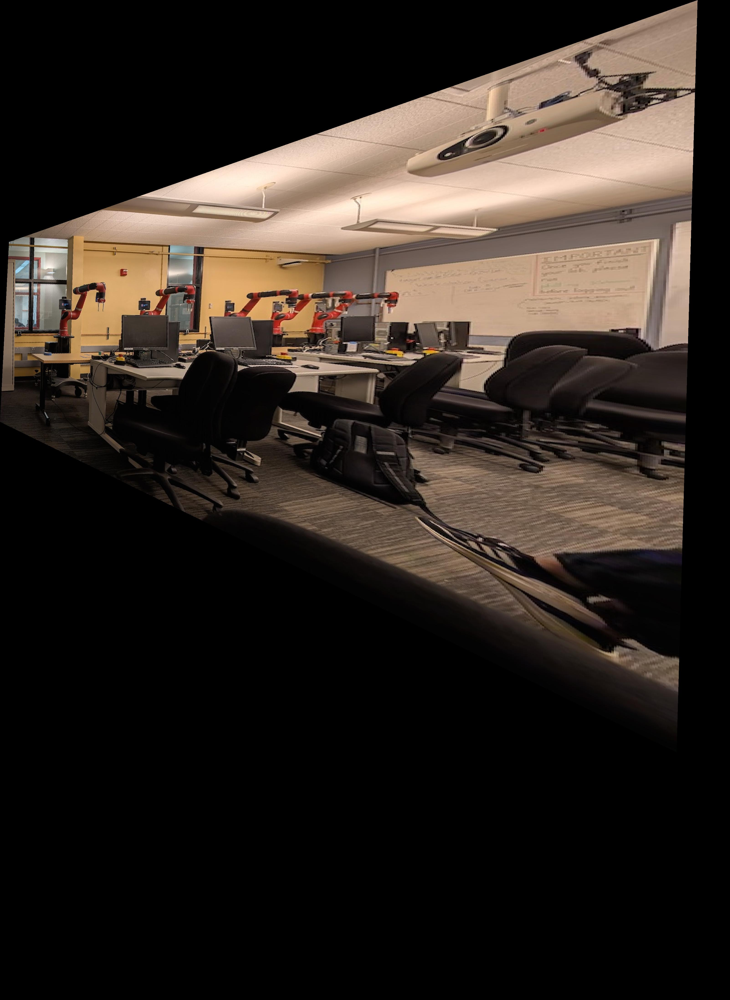 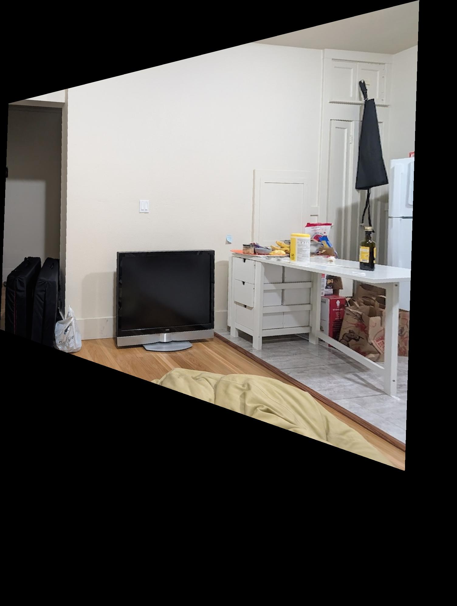To obtain these rectifications, I manually found points for objects that I know are rectangles (in this case, the monitor and tv respectively) and I created my own points that are a rectantly. Finally I found the transformation between these two and warped the image to the rectangular points.
In this part I combine three photos taken at similar but slightly different angles into one panorama. I used the following method: Warp the first image into the chosen correspondence points of the second image. Then calculate the necessary size of the frame to fit both images. Then blend the images together to smooth the seam. Then repeat this but with the combined first and second images warped to the shape of the third image.
More on blending: in order to blend I first used scipy.ndimage.morphology.distance_transform_edt to create a mask of each image in which the value of the pixel is a function of its Euclidean distance to the nearest background. Then I used these masks to create a single mask representing where the distance to an edge of each pixel in the first image is greater than that of the second. Finally I used a 2-step laplacian pyramid as in project 2 to combine the two images into one.
Mask:
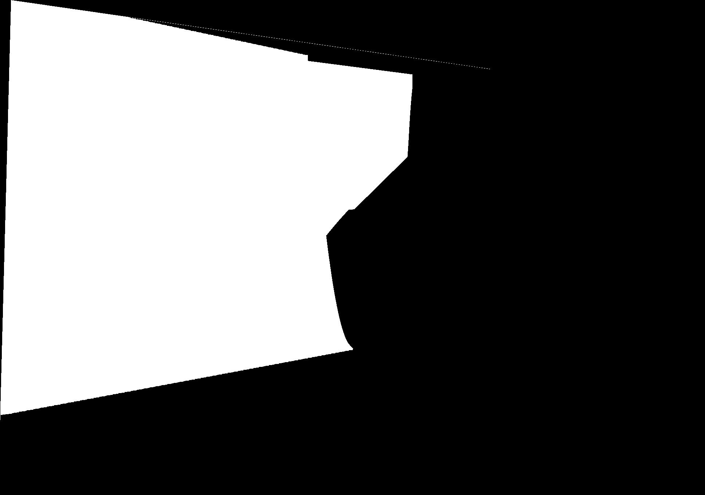Original:
Stitched:
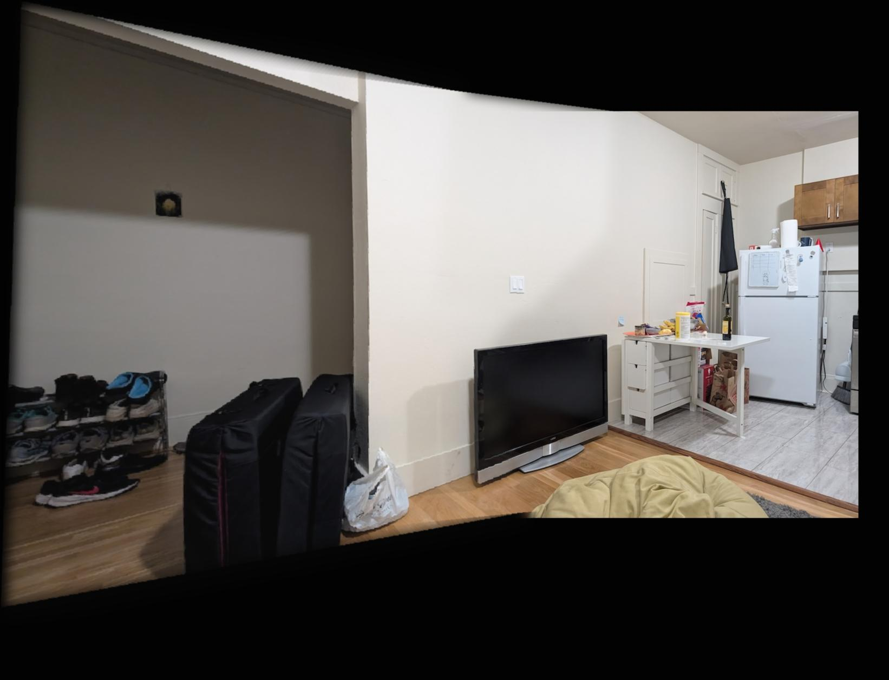Original:
Stitched:
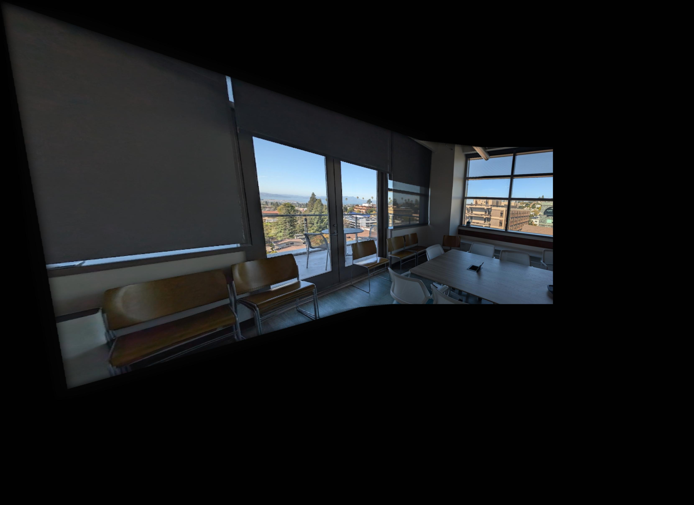Original:
Stitched:
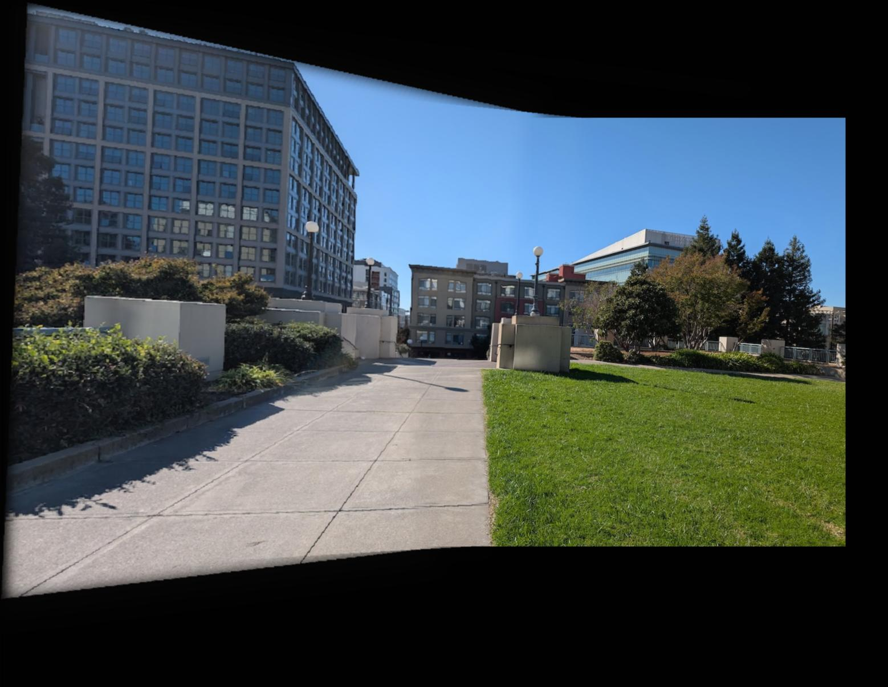To detect corners, we find the Harris matrix, which reflects how much each pixel is affected by changes in the horizontal and vertical direction. Once we have the Harris matrix, we find the peaks and use those as the interest points.
One issue with the Harris interest points as is is that some of them are clumped up close together. This gives redundant information that also make it slower to find matches down the line. To reduce the number of points while also keeping reasonable spread, we implement adaptive non-maximal supression.
To implement this, I first found r_i for every point x_i where r_i is the minimum distance between x_i and another interest point that is strong enough (strong enough meaning c_robust(new_point) > x_i, where c_robust is a tunable parameter). Finally, I took the n points with the largest r_i where n is the number of desired unsupressed points. Below is the same image as above but with ANMS:
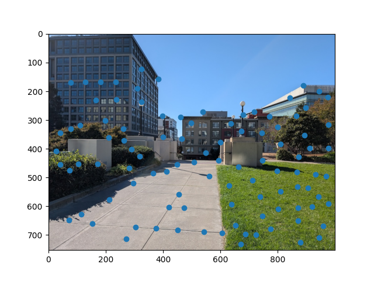In order to match points from one image to another, we have to extract features from each point. To do this, I created 8x8 feature patches for each point that is a sample from a 40x40 patch of the image, which is blurred to prevent anti-aliasing. Here's an example of a single patch:
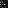In order to match our points to each other, I first calculate the feature distance from each point to all other points where the feature distance is the L2 distance between patches. Then I sort the neighbors by feature distance and calculate the Lowe ratio between the closest nearest neighbor and the second closes nearest neighbor. Then if the Lowe ratio is below a certain threshold, I add the point and its nearest neighbor to a list of matches. Here's an example of matched points:

I've found that usually the correspondences with just the matching procedure above are good, but sometimes if there are multiple features that look similar, there will be an incorrect match. To fix this, I implemented RANSAC which, for each iteration, finds four random matches and computes an exact homography between them. Then for each matching point, if the distance between the original point in one image and the transformed point in the other is less than epsilon, that correspondence is considered an inlier, and is added to a list. I keep track of the list with the largest inliers, and the largest list of inliers by the end of the loop is returned. Below is an example result after RANSAC:

Finally, using the correspondences from the output of RANSAC, I repeat the steps from the end of part A to stitch three images together. Below are the results for each of my sets of images.
The coolest thing I learned in this project was how to match correspondence automatically. I know this was the whole point of part B, but I know it's a big problem in computer vision to figure out how an object in one image relates to that same object in a different image, from a different angle. This project gived me a glimpse at one way to do that, at least when the perspective center is constant.